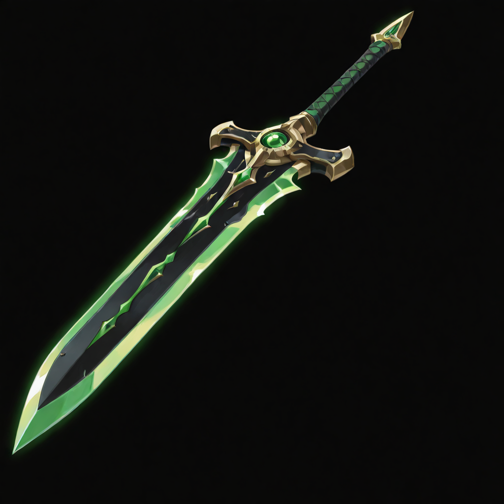
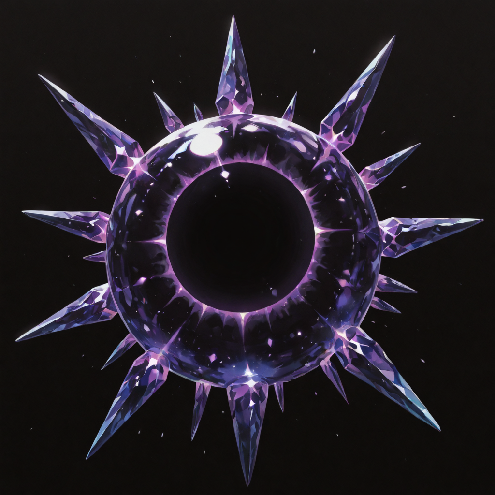
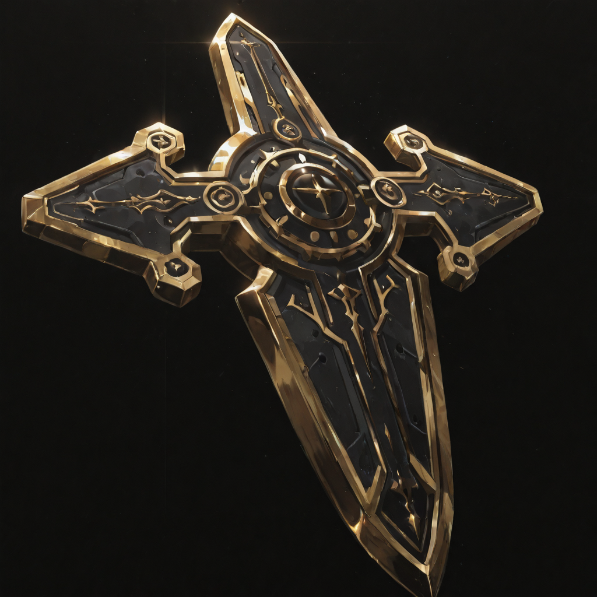
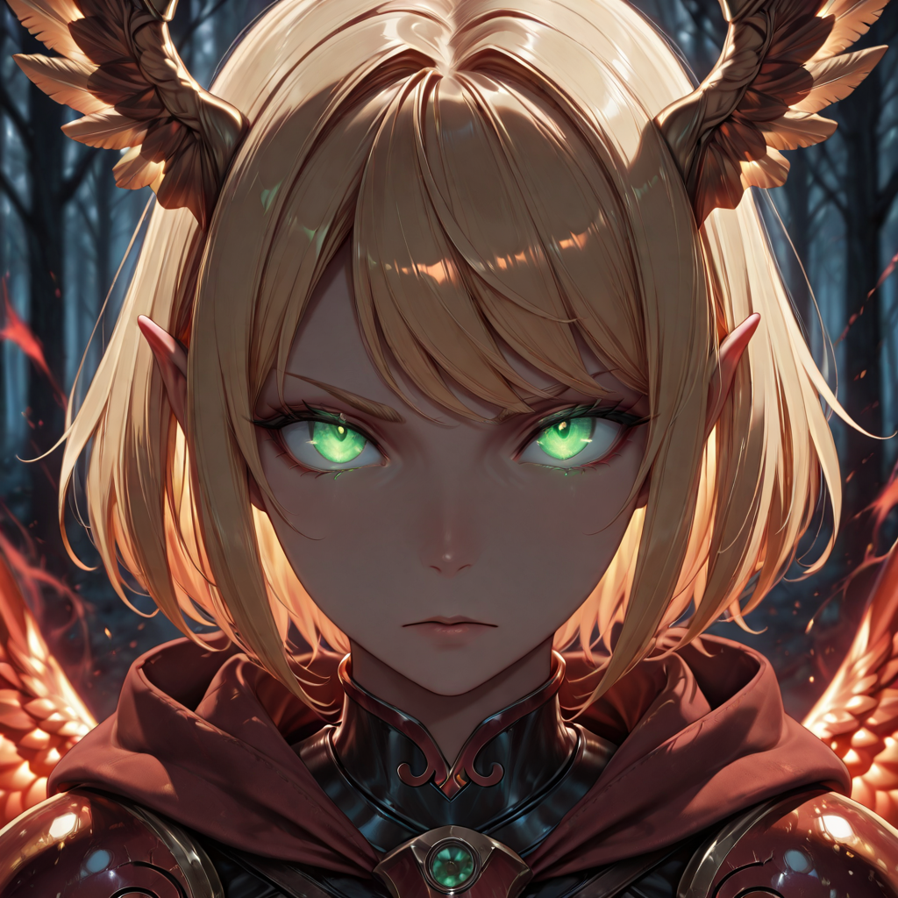

Two Lives, One Purpose
There is no record of the process by which a Defender path and an Assassin path converge. It should not be possible , they are opposite philosophies, opposite body modifications, opposite combat instincts. And yet. There are those who surpass the barrier of duality and become something that has no precedent in the Empire's taxonomy.
The Assassin Defender of the Peoples carries the love of the Valkyrie and the precision of the Elf Assassin simultaneously, without contradiction. They are the largest unit in the Arborei branch and the fastest. They stand in front of others and slip through shadows in the same breath. In their presence, the rest of the formation breathes differently , deeper, calmer, as if they have taken the weight of everyone's fear and metabolized it into something useful.
They are immune to Mind, Soul, Light, Earth, and Air damage. These are not resistances , these are closed doors. What was created from the merging of a Valkyrie and an Elf cannot be divided against itself again.
Tactical Data

Symbiosis Strike
Base Attack
Harrowing Memories
Active
Battle Control
PassiveGallery
